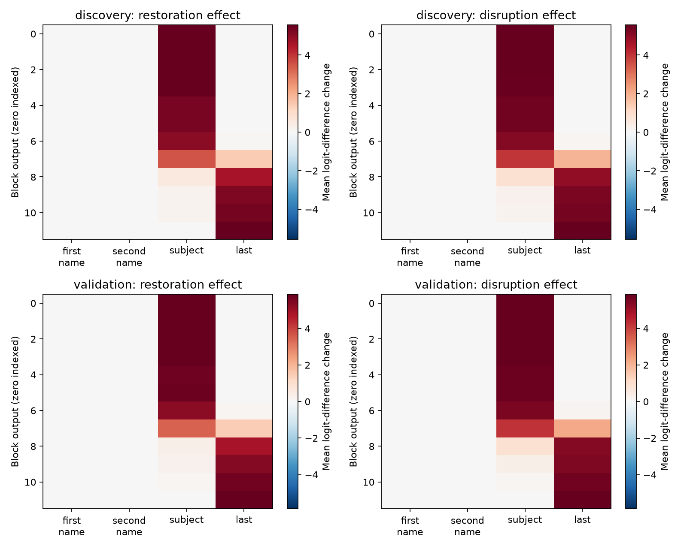

Locate information
Identify the layers and token positions where a relevant distinction affects predictions.
We begin with GPT-2 Small (124 million parameters) to study how a language model represents information, moves it through its layers, and uses it to produce an answer. The proposed next study uses Qwen3-8B on a MacBook M4 Max with 48 GB of unified memory.
An explanation should predict what happens when we intervene inside the model.
We begin with a narrow question in a small pretrained language model. The aim is to develop explanations that can be checked, challenged, and reproduced.
Identify the layers and token positions where a relevant distinction affects predictions.
Change internal activations and measure whether the model behaves as the explanation predicts.
Connect local findings into an explanation that survives new prompts and competing hypotheses.
The scope is deliberately modest: a reproducible study of a particular computation. A complete explanation of language-model intelligence is beyond this initial project.
Our approach is behavior-driven mechanistic interpretability, tested through causal interventions. Riemannian geometry can contribute, but it should support the investigation rather than determine the explanation in advance.
There is no established method that gives a complete, reliable account of an entire language model. We start with a specific behavior and build an explanation that makes testable predictions. A mechanism is an account of how internal computations produce that behavior; a causal intervention deliberately changes part of that computation to test the account.
Ask something narrow: “How does this model identify the recipient of an action?” or “What makes it use a supplied document instead of its memorized answer?” Construct examples that distinguish competing explanations. Record baseline answers before intervening, retaining failures as well as successes.
Examine activations and attention heads to propose mechanisms. A probe is a small predictor trained to read information from activations; a sparse autoencoder seeks a representation in which relatively few learned features are active at once. These tools can help locate information. Being able to decode a concept from an activation does not establish that the model uses it to produce the answer. The current experiment does not yet use probes or sparse autoencoders.
Replace an activation with one recorded from a contrasting prompt, remove a candidate component, or modify a feature. Test whether the proposed mechanism predicts the output changes. Activation patching is one such tool; conclusions depend on the prompt contrast, intervention, and measurement. Test both restoration and disruption, and include no-change controls. Patching guidance · Study of patching methods.
Explain how information is represented, transported, and transformed. Identifying an influential layer is a starting point; the aim is to explain how interacting components implement the task. Circuit-tracing methods construct graphs of interacting features, but their replacement models and approximations leave parts of the computation unexplained. Circuit tracing: methods and limitations.
Use new names, paraphrases, distracting information, and counterexamples. Check both whether removing the proposed mechanism disrupts the behavior and whether restoring it recovers the behavior under the tested conditions. Include unrelated tasks or outputs as controls for general damage to the model. A mechanism that explains one prompt may fail elsewhere.
Geometry can help in steps 2 and 3: identifying locally sensitive directions, comparing representations through their downstream effects, and designing controlled perturbations. But a direction that changes predictions still needs an explanation of what information it changes and how subsequent computation uses that information. Introduce geometry where a linear account fails to explain an observed variation, then test whether it improves the account.
A direction might correlate with correct answers. We would ask whether it generalizes across topics, survives controls for wording and confidence, and changes factual judgments selectively when intervened upon. A clear geometric picture alone cannot settle these questions.
We have model weights and activation access, so internal interventions are possible. The first GPT-2 study establishes a narrow baseline and scans block outputs for patching effects, with a small second-template check. It does not yet provide a component-level circuit, broad generalization evidence, or controls for damage on unrelated tasks. The next work is to refine the candidate mechanisms and test them. Probes, sparse autoencoders, circuit tracing, and Riemannian measurements are possible extensions, not completed analyses.
With API-only access, controlled behavioral experiments would still be possible, but this internal analysis would require additional access. Our working scope is one narrowly defined language task, an accessible pretrained transformer, and causal experiments that give the mathematics a concrete explanatory problem.
The exact checkpoint is openai-community/gpt2, a pretrained next-token predictor with about 124 million learned parameters. It has 12 transformer blocks, each with 12 attention heads, and represents each token with 768 numbers. A parameter is a learned coefficient; an activation is a value computed for a particular input. We intervene on activations while keeping the parameters fixed.
GPT-2 is a completion model, not an instruction-following chat assistant. We use it because its size and straightforward architecture make repeated, controlled experiments tractable. Our recorded run used CPU execution and full 32-bit weights. Its results belong to this checkpoint and these prompts; they are not evidence about Qwen or all language models. Model card · Architecture configuration.
For a MacBook M4 Max with 48 GB of unified memory, Qwen3-8B is a practical next research target: a substantially larger, more modern model that supports conversational use and selectable thinking or non-thinking modes. Begin with non-thinking mode to keep the first behavioral experiments controlled. Qwen3-4B is the lighter alternative when repeated patching runs take too long. These are recommendations, not models already tested by this project. Qwen3-8B model card · Qwen3-4B model card.
| Model | 32-bit weights | 16-bit weights | Role |
|---|---|---|---|
| GPT-2 Small | 0.5 GB | 0.25 GB | Current reference experiment |
| Qwen3-4B | 16 GB | 8 GB | Faster next-stage studies |
| Qwen3-8B | 32 GB | 16 GB | Recommended stronger target |
Estimates use parameter count × bytes per parameter, rounded in decimal GB. Activations, attention buffers, caches, loading overhead, macOS, and other applications need additional memory. Unified memory is shared by CPU and GPU; 48 GB is not all available to the model. Short prompts, batch size one, and caching only the activations under study should leave useful headroom with 16-bit 4B/8B models. Actual peak memory and speed must be measured.
Use PyTorch with the Apple MPS backend for experiments that require hooks into internal activations. Start in 16-bit precision, check numerical stability against a reference, and avoid retaining every intermediate state. MLX is another Apple Silicon option, but requires a different instrumentation path. Quantized models are useful for local chat; they change the numerical model and need validation before comparing intervention results. The current script accesses GPT-2-specific blocks and cannot run Qwen just by changing its model name. Adapt the hooks, chat formatting, token alignment, and controls first. No Qwen weights have been downloaded here.
The experiment needs a few ideas from vectors and probability. Every formula below corresponds to something we can record or change in a run.
A tokenizer splits text into tokens: words or pieces of words. At token position t and block ℓ, GPT-2 stores a vector hℓ,t containing 768 real numbers. Individual coordinates need not have individual meanings. We ask what information a collection of coordinates carries and what the remaining network does with it.
This expresses the residual-update idea: a block adds an update to the current representation. The update comes from attention and a feed-forward network, with normalization arranged according to the architecture. It is a summary of the block, not its full implementation.
A head forms a weighted combination of value vectors v from accessible token positions. Learned query and key vectors determine the weights a. Causal masking prevents a position from reading future tokens. Multiple heads can combine different information. A large attention weight is a clue about routing; it is not, by itself, a measure of causal importance.
The output head produces one score, called a logit, for each possible next token. Softmax turns these scores into probabilities:
For a clean prompt whose recipient is Mary, our score compares Mary with John:
If D is positive, Mary is preferred over John. If D = 2, Mary is about 7.4 times as probable as John. This does not mean Mary has probability 88% overall: other vocabulary tokens may still have substantial probability. We check that each candidate name, including its leading space, is a single token.
Run both prompts normally. Then run the contrasting prompt again, replacing one block-output vector with its value from the clean run. Continue the computation and compare the new score with the contrasting baseline.
For example, if the clean score is +3, the contrasting score is −3, and the patched score is +2, the intervention restores 5 of the 6 logit units separating the baselines. Its recovery fraction is 5/6, or about 83%. Fractions become unreliable when the baseline gap is near zero, so the plots show raw logit changes. The score always uses the same name ordering within a prompt pair.
We also patch in the opposite direction: the disruption effect is Dclean − Dreverse-patched. Agreement between the two directions strengthens a local interpretation. Copying a run’s own activation back into itself should change nothing. These checks help separate an intervention effect from a programming error.
Euclidean distance treats equal-sized vector changes equally. The model may respond very differently to them. A geometry derived from its output behavior can instead measure how much a small change alters the prediction distribution:
Here δh is a small change in the representation, and G(h) is a matrix assigning different sensitivities to different directions at the current state. With a pulled-back Fisher metric, this quantity approximates twice the local KL divergence between the original and perturbed predictions. KL divergence measures a difference between probability distributions.
This is a proposed extension, not a calculation in the current experiment. Such a matrix can be singular, and sensitivity does not automatically identify a linguistic concept. We would first test specific causal hypotheses, then ask whether this geometry explains their variation across contexts. Background on pulling back information geometry.
Our first study uses GPT-2 Small, a pretrained model with 124 million parameters. We inspect it locally without training or changing its saved weights. The prompts below are from this completed experiment. The proposed Qwen3-8B study will test whether the findings extend to a different model.
When John and Mary went to the store, John gave a book to …
When John and Mary went to the store, Mary gave a book to …
Only the repeated subject changes. We compare the model’s scores for the two names, then patch block-output activations at selected token positions to see how that preference changes.
One template is used for discovery and a second for a small validation check. All answer names were checked to be single tokens. This is an exploratory dataset, not a broad benchmark. A Qwen replication will need its own tokenization checks, baseline measurements, and architecture-appropriate hooks.
The expected recipient scored above the other name in all 16 pairs, for both prompt versions. This is a two-name comparison, not unrestricted next-token accuracy. Mean clean-prompt logit differences were +2.659 for discovery and +2.950 for validation; contrasting-prompt means were −2.901 and −2.902.
Patches at the repeated subject have large effects in early blocks. Patches at the final token have large effects in later blocks. Both templates show a similar pattern, with a transition around blocks 7–8 (zero indexed).
Patching a run with its own activation leaves predictions unchanged. Separate small-model tests check restoration and hook cleanup. All identity-patch controls in the recorded run had zero maximum logit error.

The scan does not identify a complete circuit or prove that a component is essential across contexts. Early subject patches may simply transfer name identity. Final-block, final-token recovery is an output-level check. Zero effects at earlier, unchanged name positions follow from causal masking; they do not show that those names are unimportant. These observations are specific to the GPT-2 run. No completed Qwen intervention results are reported here.
The next experimental question is how attention moves information from the repeated subject toward the answer position. We can refine the GPT-2 analysis with attention-head interventions, then implement a separate Qwen3-8B replication. The latter requires validated hooks and input formatting, its own baseline, and measured memory use on the M4 Max.
Keep this overview as the project’s front door. Add a short page for each experiment: question, setup, observations, limitations, and next test. Later, introduce a reproducibility guide, a glossary, detailed methods, and geometric investigations. Maintain links from every claim to its supporting run, and distinguish replicated results from working hypotheses.
The code, guide, environment, and results below document the completed GPT-2 experiment. The separate Qwen study plan records proposed work; it does not report completed Qwen results.
Setup, interpretation, controls, and limitations
Block-output patching in PyTorch
Exact package versions from the initial run
Prompts, individual scores, interventions, and model revision
Hardware, task design, and evidence standards